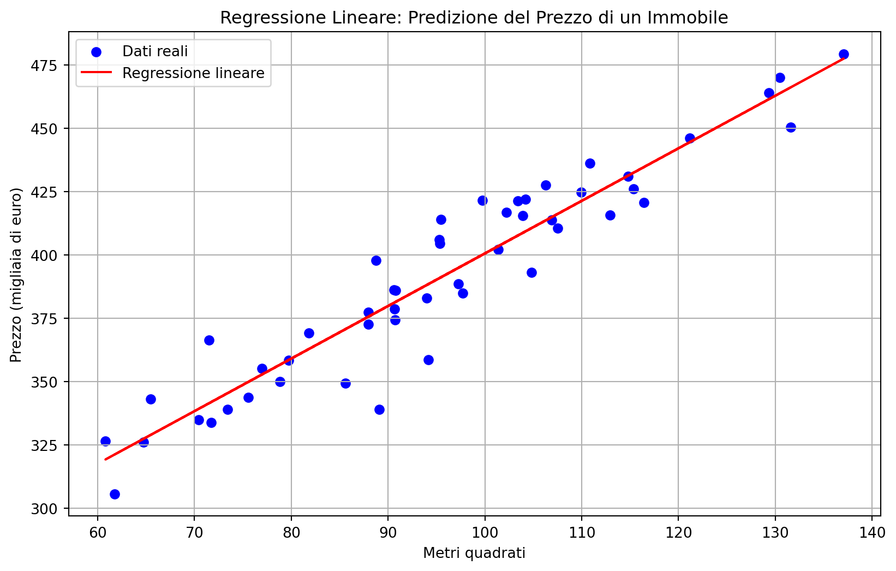

La regressione lineare è uno degli algoritmi più semplici ed efficaci per prevedere un valore continuo. Questo modello è alla base di numerosi metodi statistici e di machine learning ed è utilizzato in svariati contesti, dalla finanza alla giurisprudenza (Bishop 2006).
12.1.1 Definizione Matematica
Matematicamente, la regressione lineare è descritta dall’equazione:
\[\hat{y} = \beta_0 + \beta_1 x_1\]
Dove: - \(\hat{y}\) è il valore predetto della variabile dipendente. - \(x_1\) è la variabile indipendente. - \(\beta_0\) è l’intercetta (valore di \(\hat{y}\) quando \(x_1 = 0\)). - \(\beta_1\) è il coefficiente di regressione che determina l’influenza di \(x_1\) su \(\hat{y}\).
L’obiettivo della regressione lineare è trovare i coefficienti che minimizzano l’errore quadratico medio (Mean Squared Error, MSE):
Questa funzione di errore misura la differenza tra i valori reali e quelli predetti. La regressione lineare utilizza metodi come i minimi quadrati o la discesa del gradiente per trovare i valori ottimali di \(\beta\)(Hastie, Tibshirani, and Friedman 2009).
12.2 Regressione Lineare Multipla
La regressione lineare multipla è un’estensione della regressione lineare semplice che include più variabili indipendenti. È particolarmente utile quando si vogliono modellare relazioni più complesse tra variabili.
Dove: - \(\hat{y}\) è la variabile dipendente predetta. - \(x_1, x_2, \dots, x_n\) sono le variabili indipendenti. - \(\beta_0\) è l’intercetta. - \(\beta_1, \beta_2, \dots, \beta_n\) sono i coefficienti di regressione che indicano il peso di ogni variabile indipendente.
L’obiettivo rimane lo stesso: minimizzare l’errore tra le previsioni e i valori reali. Tuttavia, con più variabili, il modello diventa più complesso e richiede strumenti avanzati per identificare le variabili più rilevanti.
12.2.2 Selezione delle Variabili Più Influenti
Quando si lavora con la regressione lineare multipla, una delle sfide principali è determinare quali variabili indipendenti influenzano maggiormente la variabile dipendente. L’uso di troppe variabili può portare a overfitting, mentre l’esclusione di variabili importanti può causare underfitting.
12.2.2.1 Metodi per la Selezione delle Variabili
Alcuni metodi per selezionare le variabili più influenti includono:
Analisi dei Coefficienti: Se un coefficiente \(\beta_i\) è vicino a zero, la variabile corrispondente potrebbe avere un impatto trascurabile.
Eliminazione Stepwise (Backward o Forward Selection): Tecniche iterative per rimuovere o aggiungere variabili in base alla loro significatività statistica.
LASSO (Least Absolute Shrinkage and Selection Operator): Metodo di regressione che impone una penalizzazione sui coefficienti, riducendo a zero quelli meno rilevanti.
Importanza delle Variabili nei Modelli di Alberi: Anche se si sta usando la regressione, tecniche come le random forest possono aiutare a identificare le variabili più influenti.
12.3 Introduzione alla Regressione Logistica
La regressione logistica è una tecnica di classificazione utilizzata quando la variabile dipendente può assumere due valori distinti, come “colpevole” o “non colpevole”. Questo metodo è ampiamente utilizzato per la valutazione del rischio di recidiva (Kleinberg, Mullainathan, and Raghavan 2018).
12.3.1Definizione Matematica
La regressione logistica applica una trasformazione sigmoide alla regressione lineare:
La funzione sigmoide restituisce valori tra 0 e 1, interpretati come probabilità. Se \(\hat{y} > 0.5\), il modello assegna la classe 1, altrimenti assegna la classe 0.
12.4 Connessione con le Reti Neurali
Le reti neurali sono un’estensione della regressione lineare e logistica. Ogni neurone in una rete neurale esegue una combinazione lineare delle variabili di input, seguita da una funzione di attivazione, proprio come nella regressione logistica. Comprendere questi modelli è essenziale per lo studio del deep learning(Goodfellow, Bengio, and Courville 2016).
12.5 Laboratorio di Python
12.5.1 Esperimento 1: Regressione Lineare (Stima del prezzo di un immobile)
import numpy as npimport matplotlib.pyplot as pltfrom sklearn.linear_model import LinearRegression# Generazione dati simulatinp.random.seed(42)X = np.random.normal(100, 20, 50).reshape(-1, 1) y =200+2* X.flatten() + np.random.normal(0, 15, X.shape[0])# Creazione e addestramento del modellomodel = LinearRegression()model.fit(X, y)y_pred = model.predict(X)# Visualizzazioneplt.figure(figsize=(10, 6))plt.scatter(X, y, color='blue', label='Dati reali')plt.plot(X, y_pred, color='red', label='Regressione lineare')plt.xlabel('Metri quadrati')plt.ylabel('Prezzo (migliaia di euro)')plt.title('Regressione Lineare: Predizione del Prezzo di un Immobile')plt.legend()plt.grid(True)plt.show()

Questo codice Python implementa un semplice modello di regressione lineare per stimare il prezzo di un immobile in base alla sua superficie (metri quadrati). Vediamo passo dopo passo cosa fa il codice.
1. Importazione delle librerie
import numpy as npimport matplotlib.pyplot as pltfrom sklearn.linear_model import LinearRegression
numpy → usato per generare e manipolare dati numerici.
matplotlib.pyplot → usato per creare grafici.
sklearn.linear_model.LinearRegression → implementa un modello di regressione lineare.
np.random.seed(42) → imposta un seme per la generazione casuale, garantendo che i risultati siano riproducibili.
np.random.normal(100, 20, 50) → genera 50 numeri casuali con media 100 e deviazione standard 20 (rappresentano i metri quadrati delle case).
reshape(-1, 1) → trasforma l’array in una matrice con una colonna e 50 righe (richiesto da sklearn).
y = 200 + 2 * X.flatten() + np.random.normal(0, 15, X.shape[0]) → crea i prezzi delle case seguendo una relazione lineare:
200 è l’intercetta (prezzo base).
2 * X significa che il prezzo aumenta di 2 unità per ogni metro quadrato in più.
np.random.normal(0, 15, X.shape[0]) aggiunge rumore casuale ai prezzi per simulare dati reali.
3. Creazione e addestramento del modello di regressione lineare
model = LinearRegression()model.fit(X, y)
LinearRegression() → crea un modello di regressione lineare.
model.fit(X, y) → addestra il modello usando i dati (X come input e y come output).
4. Predizione dei valori
y_pred = model.predict(X)
model.predict(X) → usa il modello addestrato per calcolare il prezzo stimato delle case.
5. Visualizzazione dei risultati
plt.figure(figsize=(10, 6))plt.scatter(X, y, color='blue', label='Dati reali')plt.plot(X, y_pred, color='red', label='Regressione lineare')plt.xlabel('Metri quadrati')plt.ylabel('Prezzo (migliaia di euro)')plt.title('Regressione Lineare: Predizione del Prezzo di un Immobile')plt.legend()plt.grid(True)plt.show()
plt.scatter(X, y, color=‘blue’, label=‘Dati reali’) → disegna un grafico a dispersione con i dati reali (metri quadrati vs prezzo).
plt.plot(X, y_pred, color=‘red’, label=‘Regressione lineare’) → disegna la linea di regressione che approssima i dati.
Aggiunge etichette, legenda e griglia per migliorare la leggibilità.
Cosa rappresenta il grafico?
I punti blu sono i dati reali (metri quadrati vs prezzo dell’immobile).
La linea rossa rappresenta la retta della regressione lineare, ovvero la previsione del modello.
L’obiettivo è trovare la linea che meglio approssima i dati per poter stimare il prezzo di una casa conoscendone solo i metri quadrati.
Conclusione: Il modello impara una relazione lineare tra la superficie dell’immobile e il prezzo, permettendo di stimare il valore di case future basandosi sui metri quadrati!
import numpy as npimport pandas as pdimport matplotlib.pyplot as pltfrom mpl_toolkits.mplot3d import Axes3Dfrom sklearn.linear_model import LinearRegression# Creazione di un dataset simulatonp.random.seed(42)n =100X1 = np.random.rand(n) *100# Variabile indipendente 1 (es. età)X2 = np.random.rand(n) *50# Variabile indipendente 2 (es. anni di esperienza)y =30+2.5* X1 +1.8* X2 + np.random.normal(0, 10, n) # Output con rumore# Creazione del modello di regressione lineare multiplaX = np.column_stack((X1, X2))model = LinearRegression()model.fit(X, y)# Predizione dei valoriy_pred = model.predict(X)# Visualizzazione dei coefficientiprint("Coefficienti:", model.coef_)print("Intercetta:", model.intercept_)# Creazione del grafico 3D per visualizzare i dati e il piano di regressionefig = plt.figure(figsize=(10, 6))ax = fig.add_subplot(111, projection='3d')# Scatter plot dei dati realiax.scatter(X1, X2, y, color='blue', label='Dati reali')# Creazione della superficie di regressioneX1_grid, X2_grid = np.meshgrid(np.linspace(X1.min(), X1.max(), 20), np.linspace(X2.min(), X2.max(), 20))y_grid = (model.intercept_ + model.coef_[0] * X1_grid + model.coef_[1] * X2_grid)ax.plot_surface(X1_grid, X2_grid, y_grid, color='red', alpha=0.5)# Etichette degli assiax.set_xlabel("Età")ax.set_ylabel("Anni di esperienza")ax.set_zlabel("Salario stimato")ax.set_title("Regressione Lineare Multipla")plt.legend()plt.show()
Questo codice Python implementa un semplice modello di regressione lineare multipla per stimare il salario di un impiegato in base all’ età e agli anni di esperienza dell’impiegato. Vediamo passo dopo passo cosa fa il codice.
1 Generazione dei dati Il codice genera un dataset simulato con 100 osservazioni e due variabili indipendenti:
X1: età della persona (tra 0 e 100 anni).
X2: anni di esperienza lavorativa (tra 0 e 50 anni).
y: salario stimato in base a un modello lineare con una certa variabilità casuale (rumore).
La relazione tra le variabili è definita dalla formula:
Il valore 30 è l’intercetta (valore base del salario).
2.5 è il peso dell’età (ogni anno di età in più aumenta il salario di 2.5 unità).
1.8 è il peso degli anni di esperienza (ogni anno di esperienza in più aumenta il salario di 1.8 unità).
Il rumore introduce variazioni casuali per simulare dati realistici.
2 Creazione del modello Dopo aver organizzato i dati in una matrice X, il codice utilizza LinearRegression() di Scikit-Learn per addestrare il modello:
model.fit(X, y)
Questo calcola i coefficienti che meglio approssimano la relazione tra le variabili.
3 Predizione e interpretazione dei coefficienti Dopo l’addestramento, vengono stampati i coefficienti stimati:
Questi valori ci dicono quanto l’età e l’esperienza influenzano il salario.
4 Visualizzazione grafica - Il grafico 3D mostra i punti blu (dati reali) e il piano rosso che rappresenta la superficie di regressione. - Il modello cerca di minimizzare la distanza tra il piano e i punti reali.
In questo epserimento abbiamo visto come applicare la regressione lineare multipla per prevedere un valore (salario) in base a più variabili (età ed esperienza).
12.5.3 Esperimento 3: Regressione Logistica
In questo esperimento simuliamo un’applicazione della regressione logistica in ambito penale, con l’obiettivo di prevedere la probabilità di recidiva di un imputato sulla base di:
Età,
Presenza di precedenti penali.
import numpy as npimport matplotlib.pyplot as pltfrom sklearn.linear_model import LogisticRegressionfrom sklearn.model_selection import train_test_splitfrom sklearn.metrics import ( confusion_matrix, ConfusionMatrixDisplay, classification_report)# 1. Simulazione dati: rischio di recidiva in funzione di età e precedentinp.random.seed(42)n =500eta = np.random.randint(18, 60, n) # età tra 18 e 60precedenti = np.random.binomial(1, 0.4, n) # 0 = nessun precedente, 1 = precedenti# Funzione probabilità: maggiore con precedenti e minore etàp_recidiva =1/ (1+ np.exp(-(-4+0.08* (60- eta) +2.5* precedenti)))y = np.random.binomial(1, p_recidiva)# Preparazione datasetX = np.column_stack((eta, precedenti))X_train, X_test, y_train, y_test = train_test_split(X, y, test_size=0.3, random_state=42)# 2. Regressione Logisticamodel = LogisticRegression()model.fit(X_train, y_train)y_pred = model.predict(X_test)y_prob = model.predict_proba(X_test)[:, 1]# 3. Valutazionecm = confusion_matrix(y_test, y_pred)report = classification_report(y_test, y_pred, output_dict=True)# 4. VisualizzazioneConfusionMatrixDisplay(confusion_matrix=cm, display_labels=["No recidiva", "Recidiva"]).plot()# Decision boundaryplt.figure(figsize=(10, 6))plt.scatter(X_test[:, 0], y_prob, c=X_test[:, 1], cmap='coolwarm', edgecolor='k')plt.xlabel("Età")plt.ylabel("Probabilità predetta di recidiva")plt.title("Probabilità di recidiva in funzione dell'età e dei precedenti")plt.colorbar(label="Precedenti (0=No, 1=Sì)")plt.grid(True)plt.show()(report, model.coef_, model.intercept_)
Il codice Python implementa un semplice modello di regressione logistica per prevedere la probabilità di recidiva di un imputato sulla base di età e presenza di precedenti penali. Vediamo passo dopo passo cosa fa il codice.
Abbiamo generato un dataset fittizio di 500 imputati, in cui:
L’età è compresa tra 18 e 60 anni.
Il 40% ha precedenti penali.
La probabilità di recidiva è più alta per:
imputati con precedenti,
imputati più giovani.
Questa probabilità è calcolata con una funzione logistica: